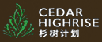

杉树计划（CEDAR），全称上海杉树青年职业能力发展中心。杉树计划CEDAR是由中欧国际工商学院旗下中欧爱心联盟的陈瑶女士，罗念慈先生和史丽女士在2012年发起的公益项目，发起于中欧，贡献于社会。杉树计划 旨在点燃年轻人心中的希望、提高大学生职场竞争能力和综合素质的计划，一个培养自立自信自强懂得感恩和回馈社会的卓越人才的服务平台； 是一个发起于中欧、贡献于社会的项目。
杉树计划， 意喻那些有志于成才的青年，希望他们像杉树一样， 长得快， 长得直， 用途广泛， 独木成才， 众木成林； 杉树喜欢希望杉树队员们在志愿者的指引帮助下， 在彼此的学习中， 在社会的磨练中快速成长， 积极向上，多元发展， 迅速成长为卓越的个人和秀丽的“杉树风景线”.
杉树计划向社会公开邀请社会菁英爱心人士作为志愿者， 奉献自己的爱心、时间、经验、技能和专业只是指导支持大学生的正向成长， 截止到2015年5月为止，全国已经有超过1,000人组成的公益导师，公益教练， 公益讲师和其他志愿者支持杉树队员们的茁壮成长。
中国青少年发展基金会简称为"中国青基会"，中国青基会是5A级基金会，1989年3月由共青团中央发起成立。中国青基会是全国性公募基金会，其面向公众募捐的地域是中国以及许可中国青基会募捐的国家和地区。中国青基会的使命是：通过资助服务、利益表达和社会倡导，帮助青少年提高能力，改善青少年成长环境。多年来，基于共同使命、共同价值观、共同的道德标准及共同行动，中国青基会与全国37家地方青基会形成全国青基会共同体。